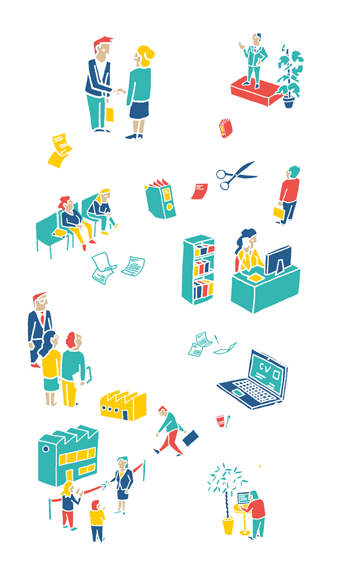
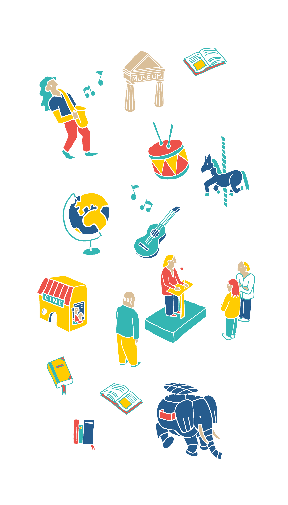
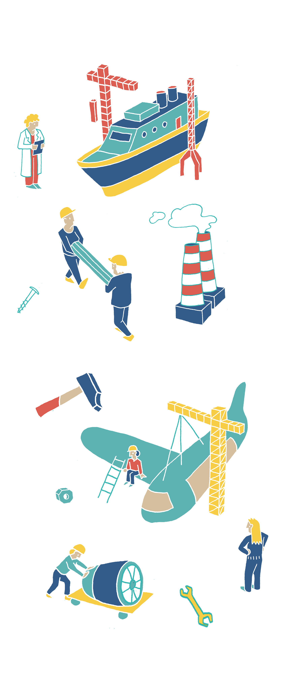

Pourquoi s'installer dans
la métropole Nantes St Nazaire?


Je m’appelle Emmanuelle, j’ai 38 ans et il y a un an, j’ai choisi d’installer une filiale de mon entreprise dans la métropole de Nantes/Saint-Nazaire.
Je vivais à Paris, vous cernez l’ambiance : métro, boulot, dodo.
Quotidien stimulant mais difficile pour envisager une vie de famille.

Plusieurs opportunités se présentaient à moi
pour m'installer dans l'une des métropoles du paysage français.
Chacune disposant de ses avantages propres.
Il me fallait donc trouver la meilleure combinaison
pour allier environnement de travail stimulant et cadre de vie idéal.


 Lille
Rennes
Nantes
Bordeaux
Lyon
Nice
Aix-Marseille
Grenoble
Strasbourg
Toulouse
Lille
Rennes
Nantes
Bordeaux
Lyon
Nice
Aix-Marseille
Grenoble
Strasbourg
Toulouse

Survolez les villes !
Chai pas quoi écrire ici
Avec la nouvelle ligne de train grande vitesse et des infrastructures modernes grandissante, la capitale de la Nouvelle Aquitaine est en nette croissance.
Avec 300 jours de soleil par an, les activités sportives extérieures sont au coeur de la métropole Niçoise.
Entre mer et montagnes : Toulouse, capitale culturelle du Sud-ouest, dispose d’un emplacement géographique attrayant.
Un territoire très dynamique placé au coeur de l’Europe.
Plus vaste métropole de France, l’un des grands points forts de Aix-Marseille réside dans son réseau de transports en commun, permettant de se déplacer en toute facilité.
Dotée d’un très fort tissu associatif ainsi que d’écoles de renommée, Grenoble fait partie des métropoles en expansion.
Rennes sait se démarquer avec un chômage inférieur à la moyenne nationale.
Placé au coeur de la mégalopole européenne, la ville des lumières fait rêver les actifs pour son cadre de vie agréable et dynamique.
Une ville d’échange aux loyers attractifs.

Les common en commun à NSNM sont un outil que les citoyens utilisent largement. En effet, la dynamique territoriale Nantaise donne la priorité aux cyclistes et aux commons en communs.
Les common en commun à NSNM sont un outil que les citoyens utilisent largement. En effet, la dynamique territoriale Nantaise donne la priorité aux cyclistes et aux commons en communs.

Les common en commun à NSNM sont un outil que les citoyens utilisent largement. En effet, la dynamique territoriale Nantaise donne la priorité aux cyclistes et aux common en communs.

Les common en commun à NSNM sont un outil que les citoyens utilisent largement. En effet, la dynamique territoriale Nantaise donne la priorité aux cyclistes et aux common en communs.

Les common en commun à NSNM sont un outil que les citoyens utilisent largement. En effet, la dynamique territoriale Nantaise donne la priorité aux cyclistes et aux common en communs.
Les common en commun à NSNM sont un outil que les citoyens utilisent largement. En effet, la dynamique territoriale Nantaise donne la priorité aux cyclistes et aux common en communs.
Les common en commun à NSNM sont un outil que les citoyens utilisent largement. En effet, la dynamique territoriale Nantaise donne la priorité aux cyclistes et aux common en communs.

Pourquoi s’installer dans la métropole Nantes St Nazaire ?
Cadre de vie
Enseignement
Emploi
Culture
Industrie de pointe
Développement numérique
Transports
Nantes St Nazaire, la métropole idéale pour les entrepreneurs ...
Nantes Saint-Nazaire Métropole est une métropole dynamique sous différents aspects et remplie de nombreux critères que ce soit pour développer son activité ou plus simplement s'y installer.
AGR
Laura BOIDRON
Nicolas GERARD
Olwen GENDROT

SCIENCES COM'
Louis FAYOLLE
Solenn PAGE
Romain MORICE
Clara DURAND

POLYTECH
Yacouba DIABY
Amadou KANE
Matthieu FAVREL
Les données de notre équipe nous ont été fournies par l’AURAN. Ces données ont été récoltées sur la période de 0000 à 0000.